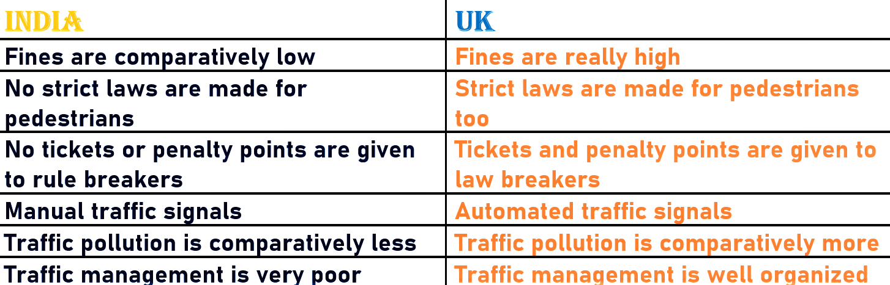
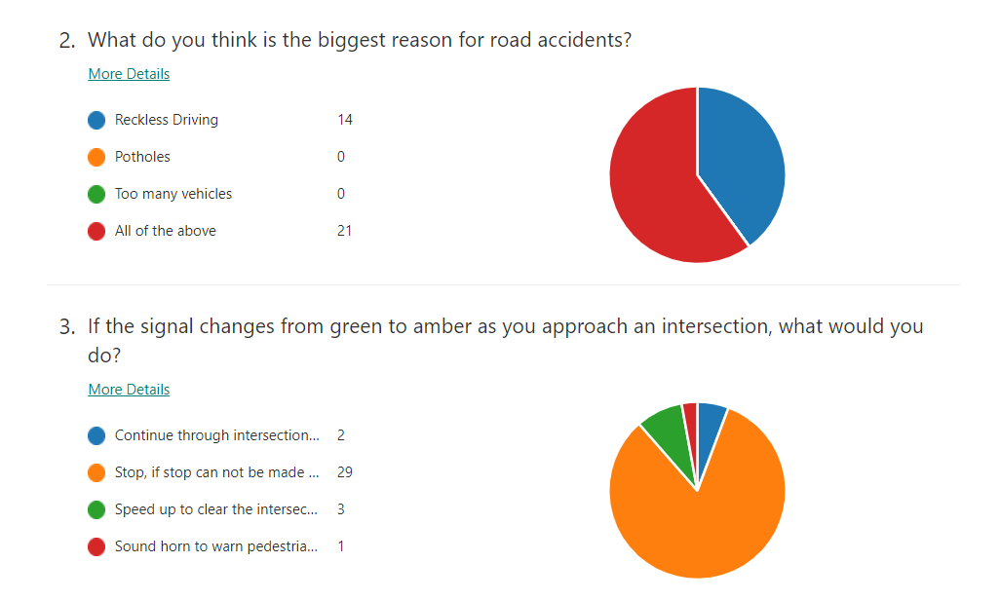
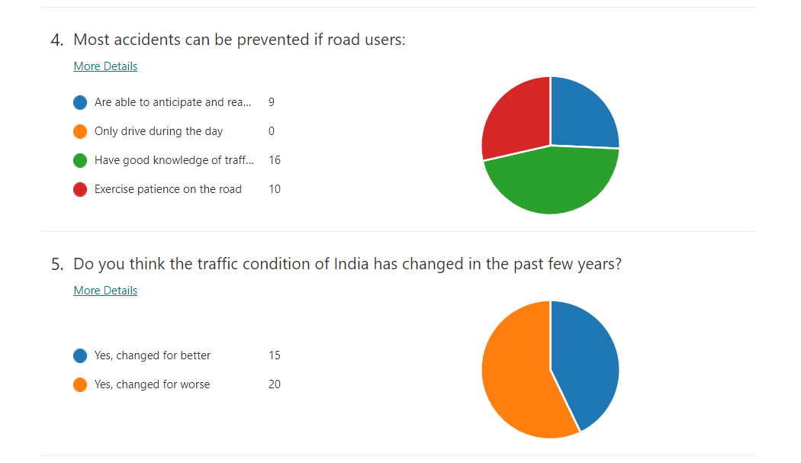
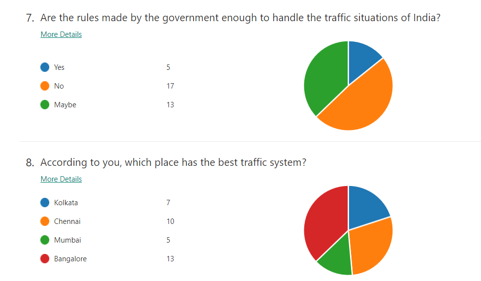
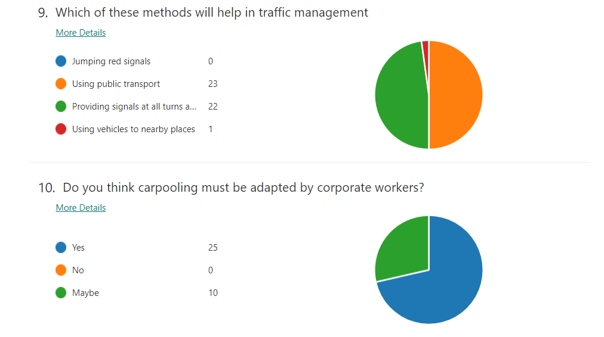

Difference in the traffic systems of India and UK

What do the people say?
 
 
To know more about TRAFFIC RULES, click on:
United Kingdom-Traffic Rules and Violations
India-Traffic Rules and Violations
Traffic Rules-Introduction